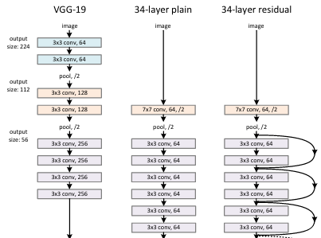
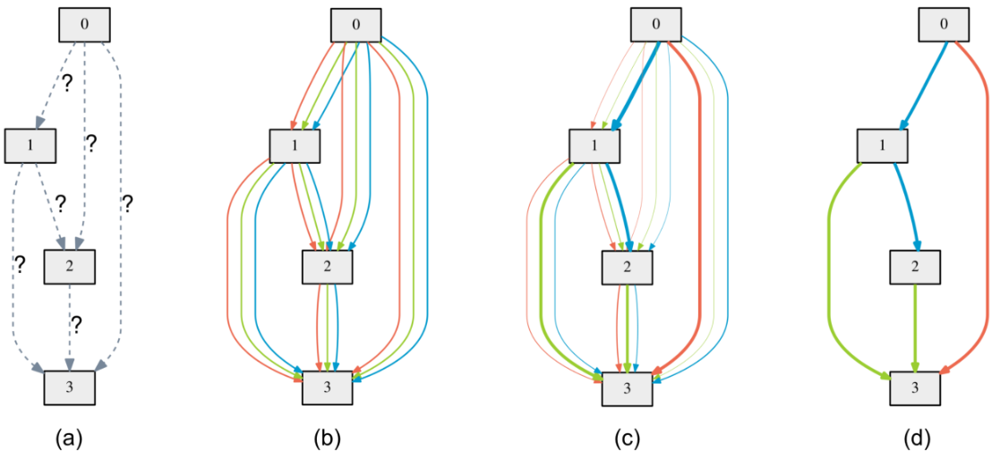

<!DOCTYPE html>
<html lang="en">

<head>
    <meta charset="utf-8" />
    <meta name="viewport" content="width=device-width, initial-scale=1.0, maximum-scale=1.0, user-scalable=no" />

    <title>Deep Learning Architectures</title>
    <link rel="shortcut icon" href="./favicon.ico" />
    <link rel="stylesheet" href="./dist/reveal.css" />
    <link rel="stylesheet" href="./static/css/reset.css" />
    <link rel="stylesheet" href="./static/css/evo.css" />
    <!-- <link rel="stylesheet" href="_assets/evo" id="theme" /> -->
    <link rel="stylesheet" href="./css/highlight/zenburn.css" />

    <link rel="stylesheet" href="./_assets/static/css/evo.css" />
    <link rel="stylesheet" href="./_assets/static/css/reset.css" />

</head>

<body>
    <div class="reveal">
        <div class="slides"><section  data-markdown><script type="text/template">

## Deep Learning Architectures

Convolutional Neural Networks, NAS

**ISAE-SUPAERO, SDD, November 2020**

Dennis WILSON

</script></section><section  data-markdown><script type="text/template">

### Putting the pieces together

So far, we've seen a number of different layer types, (Fully-connected,
Convolutional, MaxPooling) activations (Sigmoid, ReLU, Softmax), and additional
components like Dropout, which we include as a sort of "layer" in our
architecture. These and more are all the base components of neural networks
which can be mixed and matched to create different neural architectures.

</script></section><section  data-markdown><script type="text/template">

## LeNet


LeNet is often considered the first modern deep convolutional neural network.
    
LeCun, Yann, et al. "Gradient-based learning applied to document recognition." Proceedings of the IEEE 86.11 (1998): 2278-2324.

</script></section><section  data-markdown><script type="text/template">

## AlexNet


AlexNet became well-known due to its performance on the ImageNet classification
benchmark.

Krizhevsky, Alex, Ilya Sutskever, and Geoffrey E. Hinton. "Imagenet
classification with deep convolutional neural networks." Advances in neural
information processing systems. 2012.

https://github.com/pytorch/vision/blob/master/torchvision/models/alexnet.py

</script></section><section  data-markdown><script type="text/template">

## VGG (16)


The ImageNet benchmark and related competition continued to be a source of new
architectures in the 2010s with the VGG family of architectures also gaining
recognition for their performance. The impressive depth of these networks was
novel and built on advances in weight optimization.
    
Simonyan, Karen, and Andrew Zisserman. "Very deep convolutional networks for large-scale image recognition." ICLR, 2015.

</script></section><section  data-markdown><script type="text/template">

## InceptionNet


While VGG went deeper, other networks started proposing parallel blocks of small
convolutions which allowed for better dimensionality reduction. The InceptionNet
is composed of these so-called "inception blocks".

Szegedy, Christian, et al. "Rethinking the inception architecture for computer vision." Proceedings of the IEEE conference on computer vision and pattern recognition. 2016.

https://github.com/pytorch/vision/blob/master/torchvision/models/inception.py

</script></section><section  data-markdown><script type="text/template">

## GoogLeNet


GoogLeNet, named after LeNet, combined advances like inception blocks and the
deeper VGG architectures, beating VGG in 2014 by 7.32% to 6.67% on the ImageNet
benchmark.

Szegedy, Christian, et al. "Going deeper with convolutions." Proceedings of the IEEE conference on computer vision and pattern recognition. 2015.

https://github.com/pytorch/vision/blob/master/torchvision/models/googlenet.py

</script></section><section  data-markdown><script type="text/template">

## ResNet




Residual Networks use skip or shortcut connections, unweighted identity
functions, to pass information from one part of the newtork to a later part.
These so-called "residual blocks" allow for independent functions to be learned
by a part of the network without needing to also pass a transformation of the
data down-stream.

He, Kaiming, et al. "Deep residual learning for image recognition." Proceedings of the IEEE conference on computer vision and pattern recognition. 2016.

https://github.com/pytorch/vision/blob/master/torchvision/models/resnet.py

</script></section><section  data-markdown><script type="text/template">

## Differentiable Architecture Search



Neural Architecture Search, the automatic research for architectures, is growing
as a research field. Better networks than ResNet or VGG have been found with
these method for the CIFAR and ImageNet benchmarks.

Liu, Hanxiao, Karen Simonyan, and Yiming Yang. "DARTS: Differentiable
Architecture Search." International Conference on Learning
Representations. 2018. [pdf](https://arxiv.org/pdf/1806.09055.pdf)

</script></section><section  data-markdown><script type="text/template">

## NSGA-Net


Evolutionary algorithms are one popular approach to neural architecture search,
such as NSGA-Net. Important objectives in NAS are to increase model accuracy
while reducing complexity, measured by training time and number of parameters.

Lu, Zhichao, et al. "Nsga-net: neural architecture search using multi-objective
genetic algorithm." Proceedings of the Genetic and Evolutionary Computation
Conference. 2019. [code](https://github.com/ianwhale/nsga-net)

</script></section><section  data-markdown><script type="text/template">

## Exercise

Look at one of the torchvision implementations of models and the reference paper
to understand how the torch version is implemented. Train a network of your
choice on CIFAR10 using ignite.
</script></section></div>
    </div>
    <!-- <div id="footer-container" style="display:none;"> -->
    <div id="footer-container">
        <div id="footer">
            Deep Learning - Fall 2020
            <br />
            <a href="https://supaerodatascience.github.io/deep-learning/">https://supaerodatascience.github.io/deep-learning/</a>
            <br />
            <a rel="license" href="http://creativecommons.org/licenses/by-sa/4.0/"></a>
        </div>
    </div>
    <script src="./dist/reveal.js"></script>

    <script src="./plugin/markdown/markdown.js"></script>
    <script src="./plugin/highlight/highlight.js"></script>
    <script src="./plugin/zoom/zoom.js"></script>
    <script src="./plugin/notes/notes.js"></script>
    <script src="./plugin/math/math.js"></script>
    <script>
        function extend() {
            var target = {};
            for (var i = 0; i < arguments.length; i++) {
                var source = arguments[i];
                for (var key in source) {
                    if (source.hasOwnProperty(key)) {
                        target[key] = source[key];
                    }
                }
            }
            return target;
        }

        // default options to init reveal.js
        var defaultOptions = {
            controls: true,
            progress: true,
            history: true,
            center: true,
            transition: 'default', // none/fade/slide/convex/concave/zoom
            plugins: [
                RevealMarkdown,
                RevealHighlight,
                RevealZoom,
                RevealNotes,
                RevealMath
            ]
        };

        // options from URL query string
        var queryOptions = Reveal().getQueryHash() || {};

        var options = extend(defaultOptions, {"transition":"fade","transitionSpeed":"default","controls":true,"slideNumber":true,"width":"100%","height":"100%"}, queryOptions);
    </script>


    <script>
        Reveal.initialize(options);
        var footer = $('#footer-container').html();
        $('div.reveal').append(footer);
        var logo = $('#logo-container').html();
        $('div.reveal').append(logo);
    </script>
</body>

</html>
